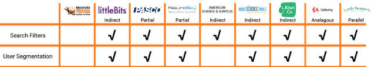
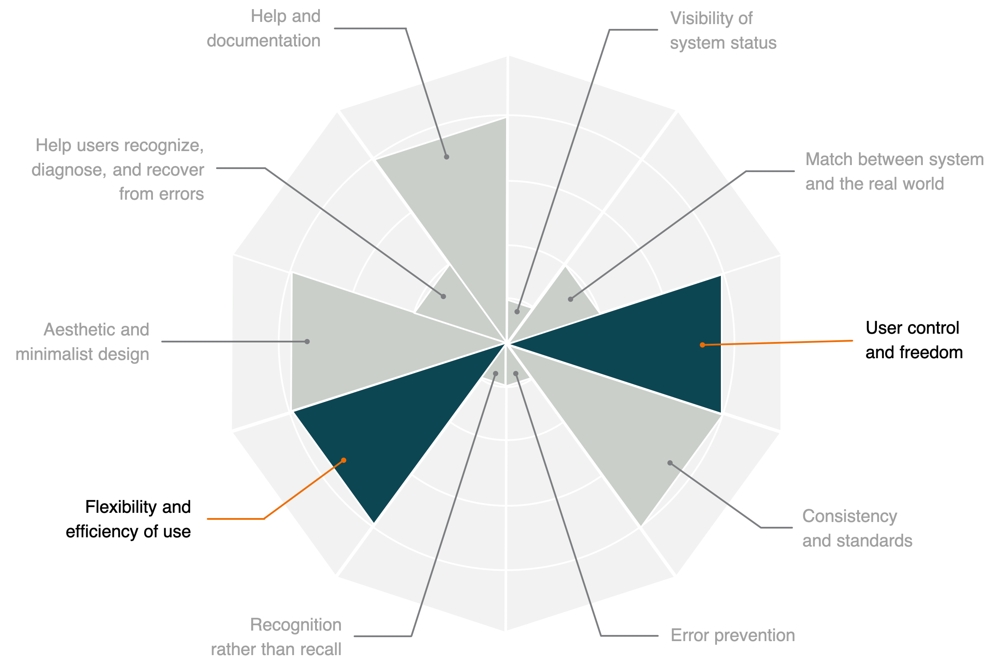
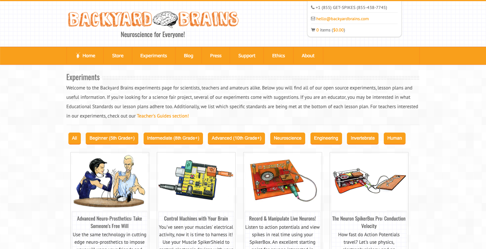
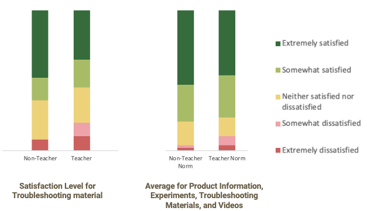
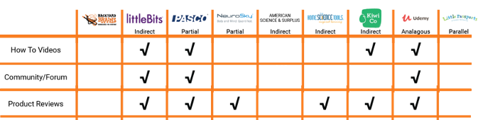
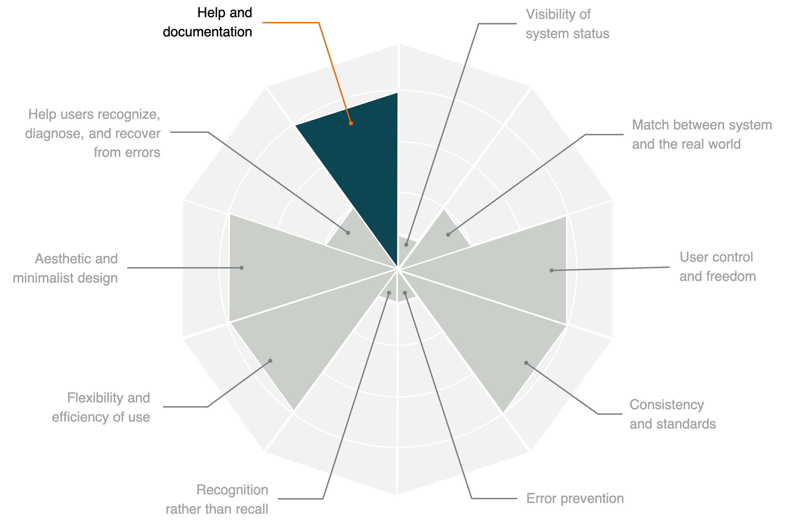
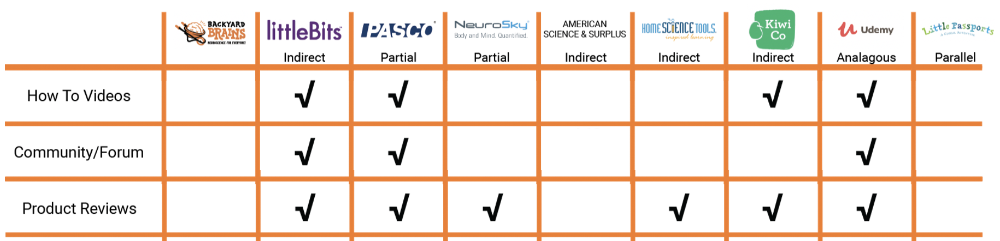
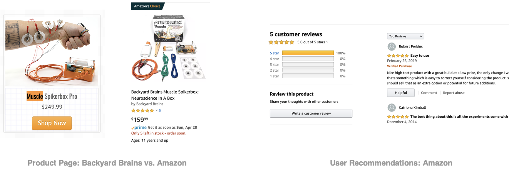

User Experience Consultant
For the University of Michigan's SI 622: Needs Assessment and Usability Evaluation course, I worked with three classmates to act as UX consultants for our assigned client, Backyard Brains.
Throughout the semester, we supported our client by conducting research, distilling findings, crafting recommendations, and holding weekly readouts to help communicate our work. Our semester concluded with high level findings that would help them meet their goals while ensure a more fulfilling user experience.
Research Methods
My teammates and I used a number of different research techniques throughout the semester. For each, we created a research plan, executed on that plan, submitted a paper detailing methods, findings, and recommendations, and created a 5-minute presentation for the class and our client.
About Backyard Brains
Background
Backyard Brains is an Ann Arbor based company founded by Greg Gage and Tim Marzullo in 2009. It produces and sells non-professional neuroscience equipment that users can run experiments with.
Mission
Make neuroscience accessible to everyone.
Target User
K-12 Teachers, Professors, Students, Hobbyists, Parents.
Problem
The Backyard Brains team noticed a high bounce rate on their website and high call volume from both new and returning customers inquirying about products.
Key Findings
Finding #1: Users Want Tailored Experiences as well as Search, Filter, and Sort Functionality
Our interviews exposed the range of users interacting with the Backyard Brains website. Some stated they didn't know where to start while others indicated they didn't know what products were right for them. Although the users have different needs, the website was not equipped to handle all of these needs effectively.
To illustrate these different users and use cases, we created personas and user scenarios. Click on each to see more.
These features are commonly found across sites, particularly in the comparitor set where seven of the eights comparators had implemented both of these features on their own websites. Not having these features can erect unnecessary obstacles, while utlilizing them inconsistently can be confusing. 
In the card sorting activity, all participants placed Beginner, Intermediate and Advanced together, and 42% placed these cards together under an “Experiments” header.
Meanwhile, 85% of participants placed Top Kits for Educators, Top Kits for Students, and Top Kits for Enthusiasts together, while 30% placed these cards together under a “Store” header.
Together, these suggest that users expect some level of segmentation, sorting and filtering on sites they visit.
According to our heuristic evaluation, the Backyard Brains website violated the “User Control and Freedom” and “Flexibility and Efficiency of Use” heuristics. All team members pointed to a lack of searching and filtering for this violation. Our heuristic evaluations revealed that locating information within the Backyard Brains website can be difficult for those unfamiliar with the website, and even those that do have some level of familiarity. In combination with previous findings, we decided to explore this in the usability study. 
Please note: the size of the triangle represents the number of teammates that noted the heuristic was violated.
Although there are filter and sort options on the experiments page, the usability study exposed that these are not useful to users. Grade-level based filters proved to be an onstacle when users tried to locate an experiment for specific products. 
Finding #2: Users Need and Want More Troubleshooting Materials
Interviewees all felt that the experiments Backyard Brains offers on the website are great until something goes wrong. When that happens teachers said they risk losing control of the class and need to be able to quickly recover from errors.
“If there are 3 ways to break the kit, my students will find the 21st way.”
When guaging customer satisfaction across product set up, product usage, site product information, site experiments, site troubleshooting materials and site videos, survey results were generally positive for set up and site features. However, there was a relatively higher rate of dissatisfaction for troubleshooting material, particularly amongst teachers. 
Most of the more successful comparators offered troubleshooting materials in the form of How-to-Videos as well as written documentation. They also utilized alternative forms made available through community forums and product reviews. Some comparators even offered a FAQ page to address known troubleshooting challenges. 
All team members identified that the Backyard Brains website violated the "Help and Documenation" heuristic. Each of us stated that the lack of documentation or support for troubleshooting and setup was something we had considered when marking this violation. 
Please note: the size of the triangle represents the number of teammates that noted the heuristic was violated.
Finding #3: Users Want Community and User-to-User Interaction
Participants expressed an interest in connecting with other users as it acts as an easy way to solve problems as well as facilitates community. Some users said they contact Backyard Brains in order to ask their questions, while others stated they needed product recommendations. One interviewee specified that they wanted something similar to platforms like Stack Overflow.
“In order to stay current with the trends of the day, I feel that I have to constantly learn. I like to be a sponge and take in all types of knowledge. Forums like Stack Overflow create a supportive community for collective problem solving.”
Our comparative analysis revealed that the Product Reviews, Communities and Forums, as well as Product Recommendations were used to help communicate information to users. LittleBits, PSCO, and Udemy were particularly effective at integrating these features into their respective platforms. 
During the usability study, we asked participants which ecommerce sites they use. All participants stated Amazon was one of their primary websites for online shopping. Many of them stated that the product reviews, rating systems, and recommendations on Amazon were important when making online purchasing decisions. 
Recommendations
1
Integrate troubleshooting materials
To broadly resolve frequent issues and reduce call volume, we recommend including troubleshooting, how-to-videos, and FAQ material along with the product information, on the website.
2
Segment users and tailor experiences
Offer new users some direction by segmenting the users by persona. This will allow them to find the information that is most relevant to them and feel more confident as they navigate the site. This can help reduce both bounce rate and call volume.
3
Create forums or user-to-user interactions
A forum can build community amongst users and act as a spot to crowdsource ideas. Meanwhile a rating and review system can help users understand what is best for them from people just like them. This could lead to more sales and alleviate the need to consult a Backyard Brains employee.
4
Define filter and sort features
Features like search, sort, and filter can help users navigate more expansive product lines. More specifically, a search bar can help users who know what they want whereas sort and filter can those that don’t know what to search for. In doing so, the site can bring users to the things they want most without looking to other platforms or contacting the team.
5
Maintain post-production surveys to assess customer experience and satisfaction
The survey exposed meaningful information that could be useful for future design and management decisions. Consistant sampling could offer deeper insights into users' priorities and attitudes.